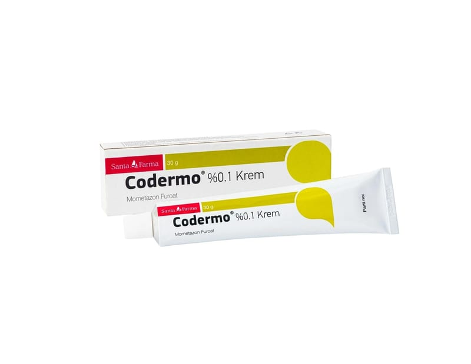

Codermo %0,1 Krem, 30 g

Ne için kullanılır
KT · Bölüm 1CODERMO®, 30 gram krem içeren tüplerde sunulur. Beyaz renkli, karakteristik kokulu, homojen görünüşlü krem şeklindedir.
CODERMO®, deriye sürülerek kullanılmak üzere hazırlanan, kortizon-tipi bir hormon ilacıdır. Güçlü kortikosteroidler sınıfında yer alır.
Bu ilaçlar belirli cilt problemlerinden kaynaklanan kızarıklık ve kaşıntıyı azaltmak amacıyla cildin yüzeyine uygulanır.
CODERMO®; psoriasis (sedef hastalığı), atopik dermatit (egzema), tahriş edici maddelere bağlı ve/veya alerjik dermatit gibi mometazon furoata yanıt veren bazı iltihaplı deri hastalıklarının tedavisinde kullanılır.
Psoriasis dirseklerde, dizlerde, saçlı kafa derisinde ve vücudun diğer bölgelerinde kaşıntılı, pullanan, pembe lekelerin görüldüğü bir cilt hastalığıdır. Dermatit cildin dış kaynaklı ajanlara
(örn. deterjanlar) karşı reaksiyon göstermesiyle ortaya çıkan ve deride kızarıklık ve kaşıntıya yol açan bir hastalıktır.